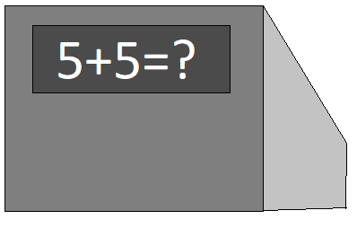

Resumo: Tipos de computadores e definição
Você conhece os tipos de computadores existentes, e como separa-los em três tipos que seguem três regras?
Você pode não ter ouvido falar, mas existe, uma regra conhecida como “3/3” três de três ou três barra três, essa regra afirma que para algo ser considerado um computador deve se encaixar em três tipos, e seguir três regras. Vamos primeiramente entender quais são esses três tipos e depois buscar entender essas três regras.
Computador Mecânico:
O primeiro tipo são os computadores mecânicos, os computadores mecânicos são computadores que dependem da energia mecânica para funcionar, em termos grosseiros, a energia do movimento. Em teoria são computadores com um poder computacional inferior aos elétricos, foi amplamente utilizado antes do advento dos computadores elétricos, e na sua época era o principal responsável pela evolução da matemática.
Computador elétrico:
Diferente do citado anteriormente, os computadores elétricos fazem uso da eletricidade. Neste sentido, para que o mesmo funcione é necessário que haja uma corrente elétrica responsável por alimentar os componentes elétricos do computador. Atualmente possuímos exemplos de grandes computadores elétricos, com capacidades inimagináveis, como é o caso do computador Frontier, que sozinho é capaz de calcular um quintilhão de cálculos matemáticos por segundo, um número maior do que a idade do universo.
Computador Biológico:
Já os computadores biológicos, são aqueles formados por organismos vivos, o maior e talvez único exemplo que conhecemos, seja o cérebro humano, embora não possa competir com os computadores elétricos e mecânicos em velocidade de cálculos matemáticos, é surpreendentemente capaz de solucionar com extrema facilidade problemas, relacionados com a lógica e criatividade, sendo conhecido por ser o único computador a conseguir interpretar e expressar conceitos abstratos.
Contudo, para os mesmos serem considerados computadores, devem seguir ainda três regras que são definidas da seguinte maneira:
1) Todo computador deve ser capaz de calcular, pois a computação é uma ciência que segue conceitos matemáticos e exatos, logo calcular se torna uma regra imutável.
2) Todo computador deve ser capaz de seguir um algoritmo, independente se surgiu com este computador, se lhe é aplicado ou se lhe é imposto.
3) Todo computador deve possuir, uma finalidade que tange a usabilidade sendo assim um propósito, que siga um porquê.
Para melhor exemplificar, imaginem que um jovem chamado “João” encontre uma caixa misteriosa na rua, ao chegar em casa ele percebe que a caixa possui uma estrutura de “teclado” na frente e algumas luzes atrás.
Todavia quando o jovem João digitava a sequencia “5+5=” na estrutura semelhante a um teclado, as luzes que estavam atrás da caixa acendiam e apagavam cerca de dez vezes.
Poderíamos definir que, João encontrou um computador?
A resposta para a indagação é, sim, pois sua mítica caixa mágica, está realizando operações matemáticas, utiliza a energia para acender as luzes, e segue determinado algoritmo, embora matemático, para representar o resultado.
Este exemplo nos dias atuais é óbvio, mas para alguém que viveu na época do Colossos, ou da Mark-1, eles não têm nada de óbvio, pois na época descrita os computadores eram máquinas grandes e pesadas.
Atenção: Caso necessite de apoio para complementar este resumo, ou uma aula sobre o tema, consulte o setor pedagógico de sua escola.